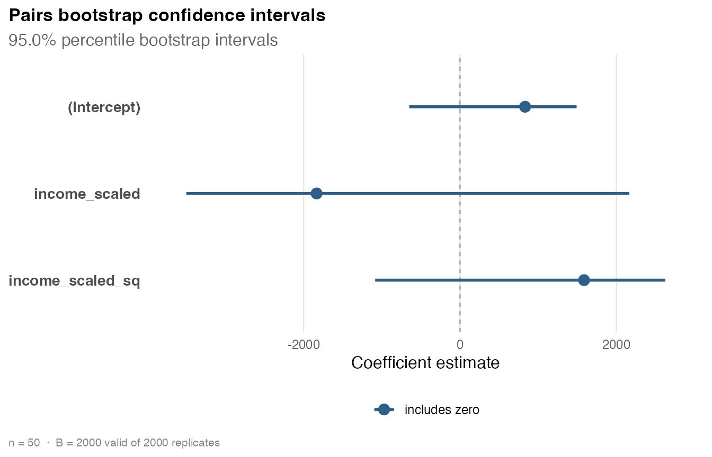

Pairs bootstrap inference with hcinfer
Source:vignettes/hcinfer-bootstrap.Rmd
hcinfer-bootstrap.RmdThe pairs (case) bootstrap is a resampling method for the
coefficients of an ordinary least squares model. It resamples whole
observations, refits the model many times, and summarizes the resulting
spread of the estimates. Because it makes no assumption about the form
of the error variance, it is a natural empirical companion to the
analytic heteroskedasticity-consistent (HC) standard errors that
hcinfer computes, and this vignette shows how to run it,
read its output, and compare it with the HC estimators.
The method
For each replicate the bootstrap draws n rows with
replacement from the original data and refits OLS on that resample.
Writing the estimate on replicate r as the vector of
refitted coefficients, the bootstrap standard error of a coefficient is
the standard deviation of its replicate values, and the bias estimate is
the mean of the replicates minus the original estimate.
boot_pairs() offers three interval types:
"percentile" uses the empirical quantiles of the
replicates, "basic" (reverse percentile) reflects those
quantiles about the original estimate, and "normal" uses
the estimate plus or minus a normal quantile times the bootstrap
standard error.
Data and model
library(hcinfer)
schools <- PublicSchools
schools$income_scaled <- schools$income / 10000
schools$income_scaled_sq <- schools$income_scaled^2
fit <- lm(expenditure ~ income_scaled + income_scaled_sq, data = schools)
fit
#>
#> Call:
#> lm(formula = expenditure ~ income_scaled + income_scaled_sq,
#> data = schools)
#>
#> Coefficients:
#> (Intercept) income_scaled income_scaled_sq
#> 832.9 -1834.2 1587.0Running the bootstrap
A single call fits the resamples and stores the estimates, standard
errors, bias, and intervals. Supplying seed makes the run
reproducible.
boot <- boot_pairs(fit, B = 2000, seed = 123)
boot
#>
#> ── Pairs bootstrap inference ───────────────────────────────────────────────────
#> Model: `expenditure ~ income_scaled + income_scaled_sq`
#> Observations: 50 | Parameters: 3
#> Replicates: 2000 of 2000 valid | Interval: percentile at 95.0%
#> Execution: sequential | Seed: 123
#> # A tibble: 3 × 5
#> term estimate bias boot_se ci
#> <chr> <chr> <chr> <chr> <chr>
#> 1 (Intercept) 832.9 -238.7 637.4 [-649.6, 1492]
#> 2 income_scaled -1834 648 1722 [-3501, 2165]
#> 3 income_scaled_sq 1587 -433 1151 [-1085, 2626]Extractors
The coef(), vcov(), and
confint() methods pull out the pieces you need.
coef() returns the original OLS estimates,
vcov() the bootstrap covariance matrix, and
confint() the interval table.
coef(boot)
#> (Intercept) income_scaled income_scaled_sq
#> 832.9144 -1834.2029 1587.0423
vcov(boot)
#> (Intercept) income_scaled income_scaled_sq
#> (Intercept) 406215.5 -1096583 730159
#> income_scaled -1096582.6 2966936 -1979795
#> income_scaled_sq 730159.0 -1979795 1323952
confint(boot)
#> # A tibble: 3 × 4
#> term conf_low conf_high level
#> <chr> <dbl> <dbl> <dbl>
#> 1 (Intercept) -650. 1492. 0.95
#> 2 income_scaled -3501. 2165. 0.95
#> 3 income_scaled_sq -1085. 2626. 0.95confint() can recompute intervals at a different level
or type directly from the stored replicates, without rerunning the
bootstrap.
confint(boot, level = 0.99, type = "basic")
#> # A tibble: 3 × 4
#> term conf_low conf_high level
#> <chr> <dbl> <dbl> <dbl>
#> 1 (Intercept) -14.8 2511. 0.99
#> 2 income_scaled -6417. 327. 0.99
#> 3 income_scaled_sq 176. 4624. 0.99
confint(boot, parm = "income_scaled_sq", level = 0.90)
#> # A tibble: 1 × 4
#> term conf_low conf_high level
#> <chr> <dbl> <dbl> <dbl>
#> 1 income_scaled_sq -902. 2524. 0.9Visualizing the intervals
plot() draws each coefficient as its estimate with its
bootstrap interval, colored by whether the interval excludes zero.
plot(boot)
An empirical reference for HC standard errors
Because the pairs bootstrap assumes nothing about the error variance, its standard errors are a useful cross-check on the analytic HC estimators. The following table places the OLS, bootstrap, HCbeta, and HC3 standard errors side by side.
data.frame(
term = boot$table$term,
ols = sqrt(diag(vcov(fit))),
bootstrap = boot$table$std_error,
hcbeta = sqrt(diag(vcov(hcinfer(fit, type = "hcbeta")))),
hc3 = sqrt(diag(vcov(hcinfer(fit, type = "hc3"))))
)
#> term ols bootstrap hcbeta hc3
#> (Intercept) (Intercept) 327.2925 637.3504 850.6572 1095.001
#> income_scaled income_scaled 828.9855 1722.4796 2308.6541 2975.411
#> income_scaled_sq income_scaled_sq 519.0768 1150.6312 1547.4583 1995.242The bootstrap and HC standard errors should tell a similar story; large disagreements are worth investigating, often through high-leverage points.
Reproducibility
With a fixed seed, two runs are identical, and the call
restores the caller’s random-number stream so it does not disturb a
surrounding analysis.
a <- boot_pairs(fit, B = 1000, seed = 7)
b <- boot_pairs(fit, B = 1000, seed = 7)
identical(a$replicates, b$replicates)
#> [1] TRUERunning in parallel
For large B or large n, set
cores to 2 or more to distribute the replicate
fits across worker processes (requires the mirai and carrier packages).
The numeric result is identical to a sequential run with the same seed;
parallelism only changes the speed. The default cores = 1
runs sequentially.
boot_pairs(fit, B = 10000, cores = 4, seed = 1)Practical guidance
Use a few thousand replicates for stable standard errors and more for
stable tail quantiles of the percentile and basic intervals. Choose
ci_type to match your needs: percentile and basic intervals
adapt to skewness in the replicate distribution, while normal intervals
are symmetric. If a resample is rank deficient it is dropped with a
warning, and the summaries use the remaining replicates.